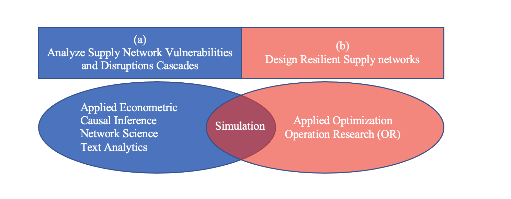

Research
My research is divided in two main sections. In the first part, I use observational data to analyze
and understand the vulnerability of global supply networks against disruptions. For this purpose, I collect data from structured data sources
such as Bloomberg, WRDS, FactSets and EIKON as well as unstructured data sources from the web and social media with predictive analytics,
text mining, and network science. In the second part, I use optimization techniques to design supply networks which are efficient during normal time yet resilient
during crisis.

Applied Econometrics
Namdar, J., Pant, G., Blackhurst, J. “Impact of Industrial and Geopolitical Concentration of Upstream Industries on Firm Resilience.” Submitted (Under Review)
Namdar, J., Suyong, S., Blackhurst, J., Zhao, K. “Predicting Nexus Suppliers to Prevent Cascading Supply Chain Disruptions.” Submitted (Under Review)
Applied Optimization
Namdar, J., Li, X., Sawhney, R., & Pradhan, N. (2018). “Supply chain resilience for single and multiple sourcing in the presence of disruption risks.” International Journal of Production Research, 56(6), 2339-2360. link [in top 20 cited paper in 2018]
Torabi, S. A., Namdar, J., Hatefi, S. M., & Jolai, F. (2016). “An enhanced possibilistic programming approach for reliable closed-loop supply chain network design.” International Journal of Production Research, 54(5), 1358-1387. link
Namdar, J., Torabi, S. A., Sahebjamnia, N., & Nilkanth Pradhan, N. (2020). “Business continuity-inspired resilient supply chain network design.” International Journal of Production Research, 1-37. link
Sahebjamnia, N., Tavakkoli-Moghaddam, R., Namdar, J., & Rezaei Soufi, H. (2016). “Designing a reliable distribution network with facility fortification and transshipment under partial and complete disruptions.” International Journal of Engineering , 29(9), 1273-1281. link
Simulation
Namdar, J., Zhao, K., Blackhurst, J. “Supply Chain Risk Management: A Guide to Disruption Resilience through Effective Resilience Strategy Choice” Submitted (Under Revision)
Namdar, J., Zhao, K., Blackhurst, J. “On synergistic effects of resilience strategies: Developing a layered defense approach.” Submitted (Under Review)
Conference Presentations
"Modeling and analysis of disruptions in chain network: A cascading simulation model," INFORMS Annual Meeting, Seattle, WA 2019
"Designing a resilient supply source though collaboration and visibility strategy: A Conditional Value-at-Risk (CVaR)," INFORMS Annual Meeting, Nashville, TN, 2016
“A New Possibilistic Programming Approach for Reliable Closed Loop Logistic Network Design under Disruption," 11th international industrial engineering conference, Tehran, Iran, 2015 [Selected as the best paper]
“An Integrated Simulation and Stochastic Data Envelopment Analysis with Random Variable for Designing a Resilient Supply Chain," In Proceedings of the 33th IIE, Istanbul, Turkey, 2013
Service
Workshop
"Holding Workshop for Data Collection" INFORMS Student Chapter, University of Iowa
Journal Referee
International Journal of Production Research
International Transactions in Operational Research
International Journal of Physical Distribution & Logistics Management
Session Chair
NFORMS Annual Meeting 2016
NFORMS Annual Meeting 2019
INFORMS Student Chapter
Treasurer of INFORMS Student Chapter, University of Iowa , 2018-2019
Secretary of INFORMS Student Chapter, University of Iowa , 2020-2021